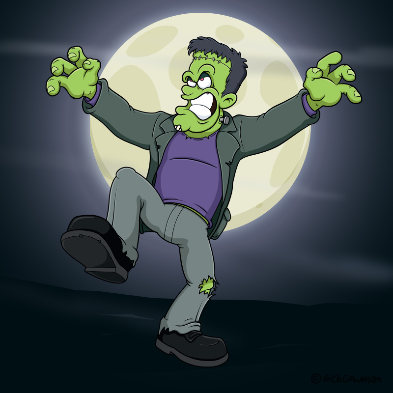
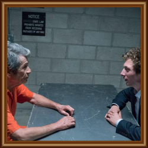
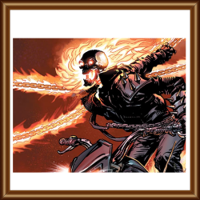
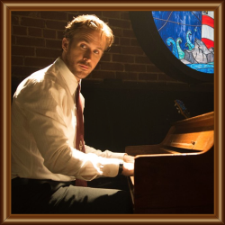

Showcases
Under Construction...
Relationship Case
The depth of a character can develop depending on who they surround themselves by. In this scene, Lip, our protagonist on the right, is sitting across from a professor who is in prison for a DUI. This professor has been his mentor, both in academics and in his alcoholism, and their complex dynamic over the seasons has helped grow Lip's personality.
[TO BE CONTINUED]
Presentation Case
The way a character is depicted, or chooses to depict themselves, can change how they are perceived both in the story and by viewers. Ghost Rider would be a wildly different character without his iconic flaming chains, skull face, leather jacket, and motorcycle. They build his personality and allow more depth, especially when his appearance changes.
[TO BE CONTINUED]
Symbolism Case
In La La Land, Sebastian is often placed next to (or actively playing) pianos throughout the film. His appreciation and love for music helps develop his strong personality, and connects with the equally artistic nature of Mia. A symbol such as this helps explain their passions in life and makes the bittersweet ending feel more fulfilling and grounded in reality.
[TO BE CONTINUED]